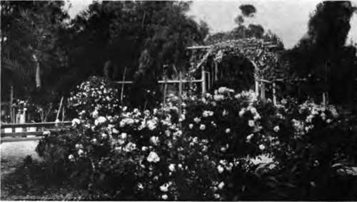
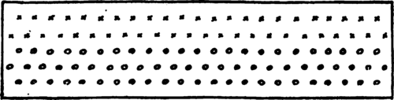

Chapter III. Laying Out The Flower Garden
Description
This section is from the book "Flower Gardening", by H. S. Adams. Also available from Amazon: Flower gardening.
Chapter III. Laying Out The Flower Garden
The initial step toward laying out a flower garden is to make - up your mind not as to the kind that you want but the kind that you ought to have.
Although this sounds heart-breaking, it is not so bad after all; it is only a matter of adjusting the mental attitude.
Of course, the kind of garden that you ought to have is the one that is best in the circumstances. In the first place, as has already been said, it should bear a relationship to the house. This does not mean that a house wholly impossible, or only halfway bad, ought to have those qualities duplicated in the garden; nothing could be more senseless than that. It does mean that there should be a certain harmony, if not actual correspondence, of character. True, there might easily be the sort of planning that would so isolate the garden as to shut it out completely from any picture of the house. This would satisfy the passerby, and your neighbor; but how about you ? Do you not want to feel that there is a certain homogeneity of atmosphere ? Well, you ought to if you do not. If the house is not right architecturally, strive to conceal its defects by beginning the garden there, so to speak. Sometimes a single vine or a few shrubs or evergreens will chasten architecture wonderfully, and at the same time serve to bridge the house with the garden.
An Italian villa would better have an Italian garden, a Georgian house a formal design of the English type, a rambling farmhouse an old-fashioned layout of no set form, a house built on rocky ground a rock garden, and so on. This is speaking broadly; in actual practice, so far as the average place of moderate size is concerned, the idea is not so much a garden that is technically accurate for its class as one that in its lines, or some distinguishing feature, suggests that class. Nor, as has previously been said, is there any need of its going by this, that or the other name; it may have a dominant Italian note in the broad view, as seen with the house, but at close range reveal such a variety of adapted touches that it can be called only the garden.
There is no occasion to fear that this limitation of plans will be a serious barrier to the expression of individual preference; the combinations that can be worked out are endless. The real limitations enter when decision must further depend on climate, soil, exposure to sun and wind and whether the house is occupied at all seasons, not to mention the matter of time. All these things must be considered, and considered well.
Time, that is to say the amount of leisure at one's disposal, is of the utmost importance. It takes time not only to make a garden, but to maintain and enjoy it. The moment that the garden uses up more time than can be given to it comfortably, it gets beyond its province—play becomes work. And a flower garden is no place for drudgery. Figure out then how much time you can spend, comfortably, not merely during the season just in sight but for at least a few years to come; and cut your garden cloth accordingly.
Climate is safely disposed of only by the elimination of all but the really dependable flowers, re membering always that in some places hot, dry summers are as much of a problem as severely cold winters in others. Soil disadvantages can be remedied wherever expense does not stand in the way. Winds and the force of the summer sun are broken by the planting of shrubs and vines. Little or no sun is harder to get around, though the last resort of a shady garden is far from being one to be altogether deplored; sometimes such a garden is a place of genuine delight.
All this figuring out what is best to be done is prime mental sport for long winter evenings. Those are rare times for the planning of gardens— when the fire burns bright and you can sit and think, devise and revise, with the comfortable feeling that spring is still well in the future—that there will be no call to dig on the morrow.
Hurry, indeed, is the last thing to enter into the planning of the garden. Much has to be thought vout, and thought out means threshed out until there is clean winnowing of the impractical from the practical.
Preliminaries out of the way, the paper stage of the game passes from memoranda into the definite form of a plan to scale. Blessings on the man who invented cross-ruled paper; with it laying out a garden is child's play, even for the unmathemat-ical mind. This paper comes in sheets, 17x14 inches, and is ruled in little squares that run thirty-six to the square inch. The squares may be called any convenient unit from a square foot up, and if one sheet of paper is not large enough two or more may be pasted together.
With a steel tape, if you can get hold of one, take measurements of the boundaries of the entire home grounds and the base lines of the house and any other buildings. Then get the distance of the house from the boundaries and locate by further measurements all existing roads, paths, trees, shrubs and borders. Having decided on your unit, transfer these measurements to the cross-ruled sheet and you have a plan of the place all ready for laying out the garden by exact scale. This plan would better settle only the location and size of the garden.
A large plan of the garden in detail should then go on a separate sheet; this to be a working scheme for planting. Here it will sometimes be found very convenient to call every six squares each way a yard, which gives plenty of space for numbers or other designations.
"Better for most a garden with roses, or else a little place apart—too unpretentious to be designated a rose garden".
All borders should be not less than four feet in width; six is better, and they may run up to ten or twelve feet if there is access from both sides. Three feet is a good average width for a path, but if growth is eventually to fall over both sides allow another foot.
Straight lines depend largely upon the amount of formality that is to enter into the plan. Sometimes, however, they are considered as the means of saving work. Every variation from straight lines calls for more labor of maintenance, as well as construction, and the same is true of the multiplicity of beds and borders in a layout. The time to think of both things is when the paper plan is taking shape.
At this point, too, it should be borne in mind that laying out a garden does not necessarily imply that you are binding yourself to do all the work designated before the next summer has flown. As a matter of fact, in the case of any layout of size or one of complexity, the better way is to make only a start the first year. If, as is again and again the case, the start is a wrong one, it will be the more quickly remedied.
Suppose the garden scheme to be a bordered path leading down to a parterre plot. Plant only the path border the first spring and let the remainder simmer until autumn—when it can be made ready for planting the following year. This is not altogether a question of dividing the labor, though that is important enough; you learn a lot as you proceed with the work and the final shaping of the plan will be easier as well as more satisfactory for the experience. If it is convenient to make ready the parterre plot the first spring, fill it up with annuals as a temporary measure.
Greater restraint than this may be exercised, and it is good advice to follow where pretty nearly everything is to be learned about plants—color • value, foliage effect, manner of growth, hardiness in a given locality and the season and duration of bloom. These things are best learned by doing all the initial planting in some out-of-the-way place like one end of the vegetable garden. Lay out long beds about six feet wide and grow your flowers there for a season, or even two or three— until you feel competent to handle them with intelligence. Plant in transverse rows, wide enough apart to use a hoe, where rapid increase of hardy stock is desired and in small groups to experiment as to color combinations and other effects. It takes courage and patience to do this, but it pays in the end.
These are more thoughts for winter evenings. Meanwhile, the paper plan is only an oudine of boundaries. The filling in of the details is simple or complex, according to the variety of plants used and the character of the color scheme. A border of Canterbury bells, white in front of pink, may be indicated on cross-ruled paper in this manner calling each one of the squares a square foot:
CANTERBURY BELLS—24x6 FT, O-PINK X-WHITE.
Or in this way. the shading indicating a color.
CANTERBURY BELLS -24x6 FT.
If the plants are in long drifts and big patches, show them so:
MIXED HARDY BORDER—24x6 FT.
A • ARABIC ALBIDA (White).
B - PHLOX DIVARICATA (Blue).
C - GRASS PINK, HER MAJESTY (White).
D- PRIMULA VERIS SUPERBA (Yellow) E - PHLOX. MISS LINGARD (White).
F- PHLOX, ROSENBERG (Violet Red).
F - PHLOX, MRS, JENKINS (White).
Apply a thin wash of water color to the sections, before the letters and numbers are put on; the indication will be all the clearer. In the final stage it is advisable to color the entire plan, using green for all grass plots and brown, gray or brick color for the paths, according to the material.
Catalogues begin to come along in January; so that these may be gone through and the selection of plants and seeds made as the work of planning progresses. Early decision and early placing of orders is wise ; you get the pick of the stock, which sometimes runs out altogether before the late* comers have been heard from. There is no danger that early orders will be shipped too soon; they merely take precedence.
Continue to:
- prev: Flower Gardens Of Many Kinds. Part 3
- Table of Contents
- next: Chapter IV. How To Succeed With Flowers